Sobre Nós
Bem-vindo à FarmZul! Somos uma fazenda urbana inovadora, localizada no coração da cidade, que nasceu do sonho de trazer alimentos frescos, saudáveis e sustentáveis diretamente para você. Aqui, na FarmZul, acreditamos que é possível cultivar o futuro de forma consciente, integrando tecnologia e natureza para transformar a maneira como produzimos e consumimos nossos alimentos.
Nossa missão é oferecer uma alternativa ecológica e acessível para quem busca uma alimentação de qualidade, enquanto cuidamos do meio ambiente e promovemos a sustentabilidade. Utilizando técnicas de cultivo modernas, como hidroponia e aquaponia, conseguimos cultivar uma ampla variedade de vegetais, ervas e frutas, tudo sem o uso de agrotóxicos e com o menor impacto ambiental possível.
Mais do que uma fazenda, a FarmZul é um espaço de aprendizado e conexão com a natureza. Oferecemos visitas guiadas, workshops e experiências imersivas para que todos possam conhecer de perto nosso trabalho e se inspirar a adotar práticas mais sustentáveis no dia a dia.
Na FarmZul, cada folha, cada fruto, cada colheita reflete nosso compromisso com a qualidade e com a sustentabilidade. Estamos aqui para trazer o melhor da terra direto para a sua mesa, cultivando saúde, bem-estar e um futuro mais verde para todos.
Venha nos conhecer e descubra como, juntos, podemos fazer a diferença!
 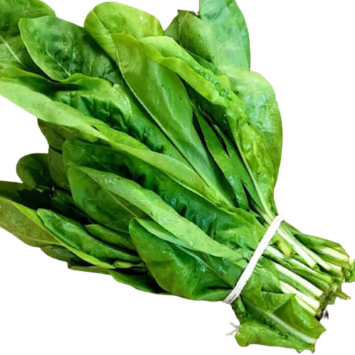
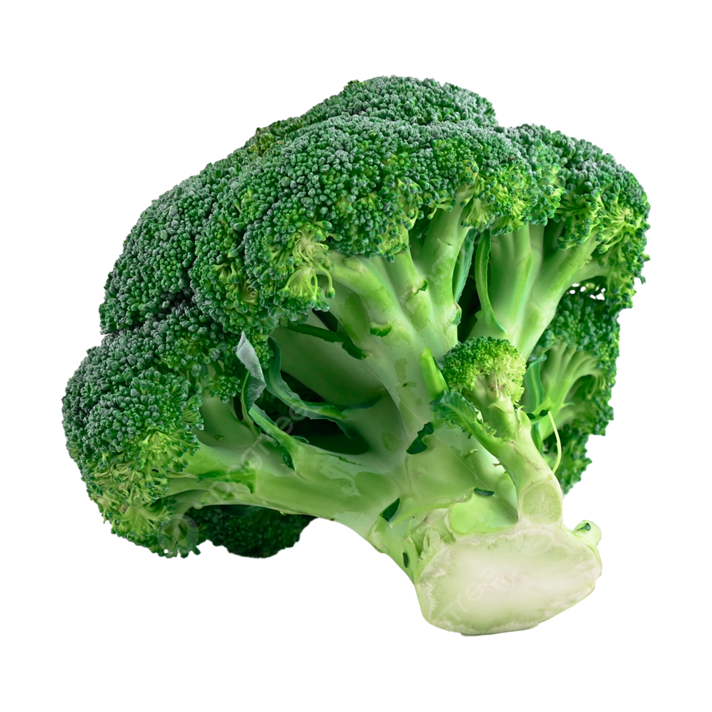
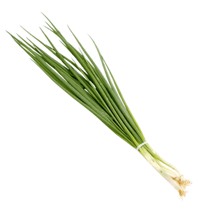
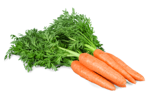
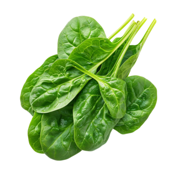
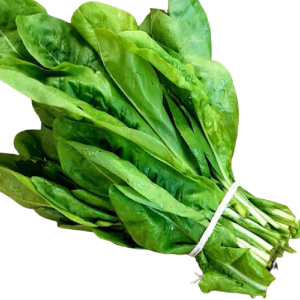
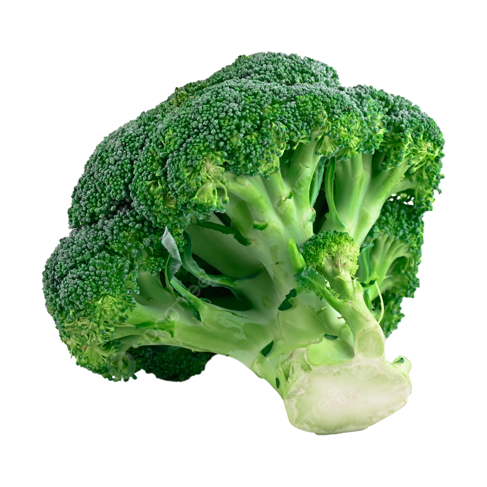
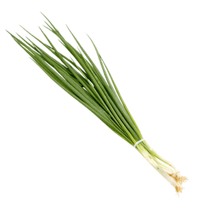
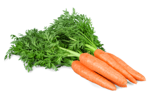
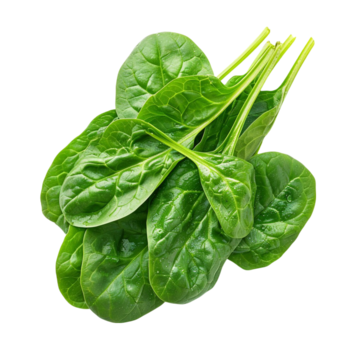


 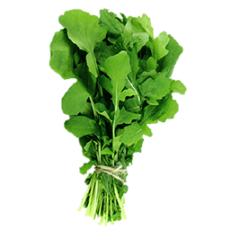
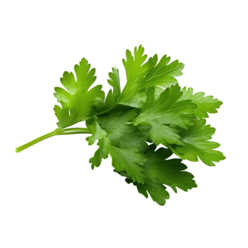
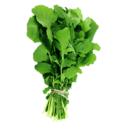
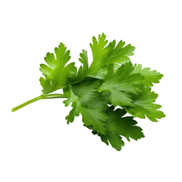